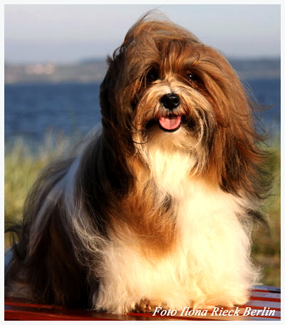
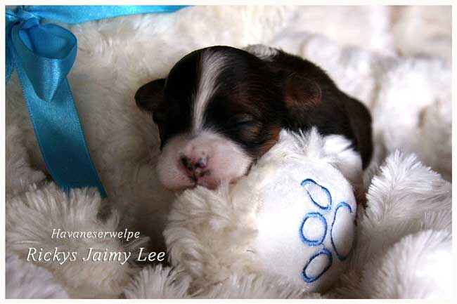
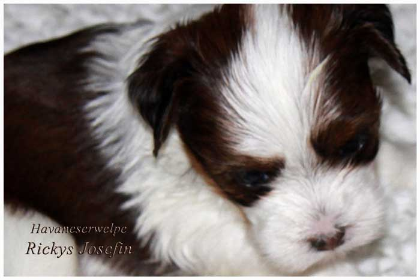
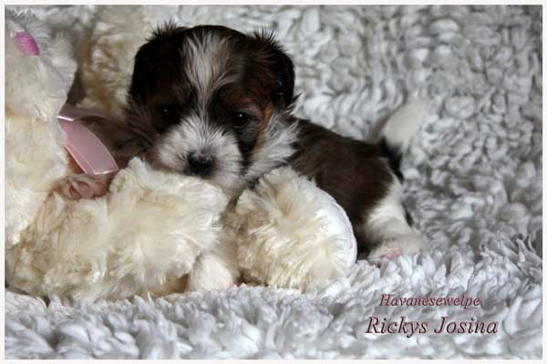
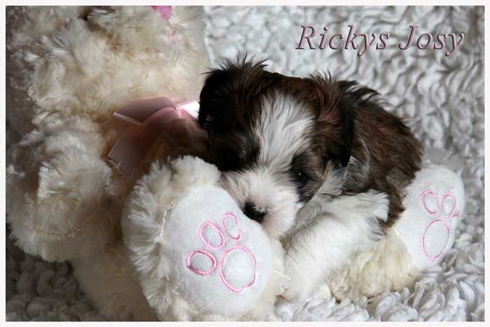

|
Welpenstube

|
|
|
|

|
Unsere Havanesermami hat uns am 19. April 2016
ganz bezaubernde Havaneserwelpen geschenkt,
genauso liebreizend anzuschaun wie die Kleinhundemami.
Wir laden Sie ein, sich ein wenig auf unseren Homepageseiten
umzuschauen, um uns und unsere Havaneser kennenzulernen.
www.rickys-havaneser.de
Sollten Ihnen unsere Havaneser und unsere Zucht gefallen,
dann freuen wir uns auf Ihre Kontaktaufnahme.
Herzlichst
Ihre Familie Rieck aus dem Berliner Randgebiet
Telefon: 030 675 9 187
Email: rieck.berlin@t-online.de
|
|

|

|
|

|

|
Hinweis:
Nicht alle Züchter melden ihre Welpen zur Vermittlung über die Homepage der Landesgruppe.
Bitte besuchen Sie deshalb auch die Webseiten der jeweiligen
Züchter
.
|